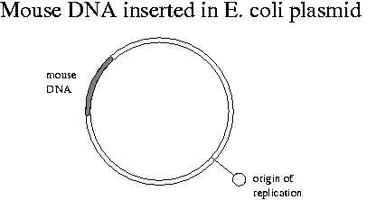
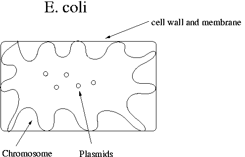
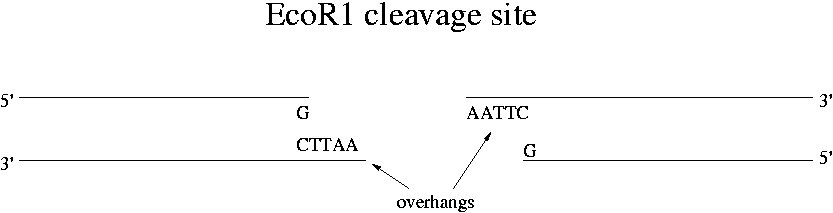

Day 2 Morning Lecture Notes
Steve Williams, Smith College
June 7, 2004
Chromosomes have DNA in million-bp lengths but random shearing during collection breaks it into segments of about 105 length. The mouse genome is about 3.3x109 bp long, which is typical for mammals. The distribution of the GAATTC Eco R1 site is close to random. The length of EcoR1-digested DNA fragments is about 3000 bp on average. The digestion runs overnight due to the variety of the sites to be cut.
Zn fingers are a type of protein recognition site for some particular DNA sequences.
When germ cells are used as a source of DNA, only one copy of each gene is obtained since germ cells are haploid. The mouse DNA in Expt. 1 came from somatic cells and so will contain two copies of each chromosome for each cell.
Due to its negative charge, DNA migrates from the negative to the positive pole in an electric field. This migration is the basis for gel electrophoresis where DNA is separated on the basis of its charge/length ("molecular weight") ratio.
The lambda phage has 48,502 base pairs of DNA. Lambda can be used as a vector or as a molecular weight (MW) marker.
Recombinant DNA: DNA from two sources ligated together in vitro. Typically recombinant DNA includes a vector and "foreign DNA."
Cloning vector: a DNA molecule that enables your foreign DNA to replicate in a host cell, usually E. coli.
Genomic library: a collection of clones representing all the fragments of a given genome.
Viruses can have four kinds of genetic material: double-stranded (ds) DNA, single-stranded (ss) DNA, dsRNA, ssRNA. All are observed in nature.
Mouse DNA simply inserted into E. coli would not replicate due to lack of appropriate biochemical signals. We will need to attach foreign DNA to a molecule that has a "replication origin" binding site for E. coli's DNA polymerase. Human DNA does have a replication origin that works in mouse cells.

The chromosome in E. coli contains the genes necessary for survival. It is attached in many places to the cell membrane. The plasmid contains the restriction enzymes and antibiotic resistance genes. E. coli cells have 100-200 plasmids. The E. coli chromosome is about 4x106 bp in length.

Increasingly the polymerase chain reaction (PCR) is making other tools in biology obsolete. However cloning of the type we will do in the lab is still necessary for genes whose sequence is not known.
Bacteriophages are the vector of choice for making libraries due to their efficiency (meaning large number of DNA copies per vector cell). Plasmids are another common vector. Phages have 1 linear piece of DNA in their head.
Each restriction enzyme will create a slightly different genomic library. Splitting of genes among different sites in the library doesn't in the end cause a problem.
Phage life cycle:
Note that cloning works only because DNA from all living creatures (virus, plant, animal, bacteria) has the same structure.
The advantage of plasmids as vectors is that they can replicate larger DNA sequences than bacteriophages.

EcoR1 actually only cuts GAATTC when the G is near the 5' end of the DNA molecule. This directionality is called "dyad symmetry." Not all enzymes have this feature. The cut is made where G and A are connected in the backbone. All restrictions enzymes cut the phosphodiester bond leaving new 5' and 3' ends. For EcoR1, the remaining 8 hydrogen bonds of the 4x(A-T) sequence is not enough to hold the two long strands together. Restriction enzymes are catalytic -- they go off to cut other strands.
Up Previous Next